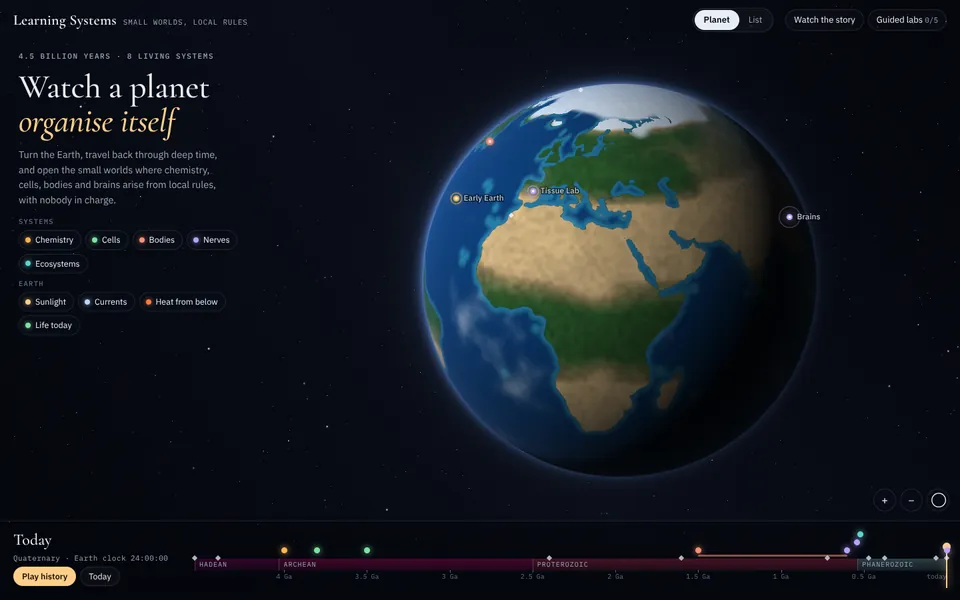
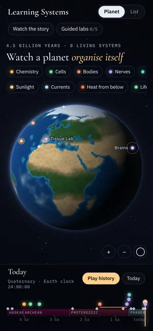

Draft 1
Observatory
A realistic Earth turns in a dark sky, as if seen through a telescope.
- Look
- Night sky, glowing markers, classic serif titles.
- Explore
- Turn and zoom the Earth, light up one kind of system or one Earth layer, and click a marker to open its panel with a live simulation.
- History
- A deep-time ruler along the bottom. Play history and the Earth changes as the ages pass.
- List view
- A plain page: ways in, every system grouped by kind, and the history.
Try: press Play history, then click a marker.